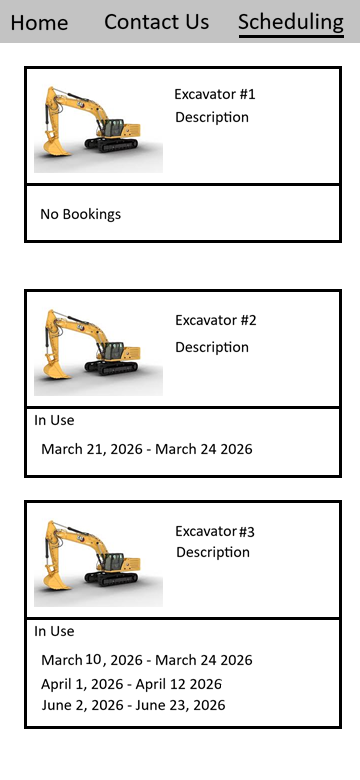

The members of team SEGA are Eli Wood, Shreyas Hegde, Gurbaz Sogi, and Aaryn Gill. Our client is 4S Solutions, which is owned by Donny Sousa, who we are communicating with. The name of the project is the 4S Solutions Excavating Website.
The purpose of the website is to serve as a landing page for anyone interested in hiring the 4S excavating service or renting their machines. The site will have a main landing page, a page containing which machines are in use or reserved at specified times, a page to send a message asking to rent a machine or service, and an admin page to read messages. We decided to add the functionality of the admin page and sending messages directly through the site to streamline the user experience and to make the users more likely to actually reach out.
The database will have 3 tables, Messages, Machines, and MachineRentals.
The messages table is necessary to store all of the messages that the users send which will be viewed on the admin page. The table will store the contents of the message and contact information for the user sending the message. The table will also store if a message has been resolved.
| PK int | text | varchar | varchar | varchar | boolean |
|---|---|---|---|---|---|
| id | content | name | phone_number | resolved |
The machines table will store all of the machines owned by 4S Solutions. The table will store the name of the machine, a description, and a link to an image.
| PK int | varchar | text | varchar |
|---|---|---|---|
| id | name | description | image |
The machine rentals table will store when specific machines are in use and when they become available. The table will store the start date, the end date, and a foreign key which references which machine is in use.
| PK int | FK int | date | date |
|---|---|---|---|
| id | machine_id | start_date | end_date |
Users sending messages will use an INSERT query on the messages table to add the message and contact info.
Reading messages from the admin page will use a SELECT query to get all unresolved messages. There may be an option to filter the messages to show only unresolved, resolved, or both.
Resolving messages from the admin page will use an UPDATE query to make a specific message resolved, so it no longer needs to be shown.
Resolving messages from the admin page will use an UPDATE query to make a specific message unresolved if it was mistakenly marked as resolved.
Viewing machines will use a SELECT query to view all machines. This will also SELECT from MachineRentals to display if the specified machine is available or in use.
Marking a machine as being rented will use an INSERT query to create an entry for a date range when a machine is in use.
Changing the date range that a machine is being rented will use an UPDATE query to modify the date range of a rental.
Eli will be working on the scheduling page which will display what machines are available and what times they are in use. He will handle the client side functionality to display the data and he will also design the php scripts necessary to get the data.
TODO
TODO
TODO

The project will have 2 main increments, the first delivery on April 7, and the final deliverable on April 19. The first increment will have a landing page, the ability to enter admin mode, the ability to send messages, a simple admin view for messages, and a listing of all machines stating when they are in use. By the final deliverable we will finalize styling, polish the messaging system by implementing resolved vs unresolved messages, and make the machine listing fully show date ranges when each machine is available or in use. Another potential goal for the final delivery is to add the ability to mark when a machine is in use to the admin page. Some of the content in the final deliverable may be done in time for the first increment, but we will prioritize what is laid out in the first increment to be done first.
TODO